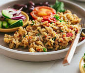

Appetizers
-
Spinach-Artichoke Dip
A warm, creamy, and indulgent dip often made with a mixture of cheeses , spinach, and artichoke hearts.
It is a classic crowd-pleaser typically served with toasted pita chips, tortilla chips, or crostini. -
Bacon-Wrapped Dates with Goat Cheese
A 3-ingredient, bite-sized appetizer that offers a sweet and salty flavor combination.
Dates are stuffed with creamy goat cheese, wrapped in bacon, and baked until crispy.
-
Whipped Goat Cheese with Smoky Bacon Jam
A sophisticated, creamy spread made by whipping goat cheese until airy, topped with savory, smoky bacon jam.
It is designed to offer a mix of textures and flavors—creamy, salty, and sweet—served with crostini.
Main Course
-
Lamb Neck with White Beans
A slow-cooked Middle Eastern-inspired dish combining tender lamb with creamy white beans and harissa for heat.

-
Ugali & Stew
A thick, dough-like porridge made from maize flour, served as a staple alongside beef, chicken, or green gram (ndengu) stew.

-
Pilau
A fragrant rice dish cooked with meat (beef or goat) and an aromatic blend of spices, including cumin, cardamom, cinnamon, and cloves.

Desserts
-
Tropical Fruit Salad
Freshly cut mangoes, papaya, passion fruit, pineapple, and bananas, sometimes drizzled with lime juice

-
Peanut Cake
A rich, nutty cake commonly found in Swahili households.

-
No-Churn Creamy Strawberry Ice Cream
Kenyan dessert that requires no ice cream maker and uses locally available ingredients like sweetened condensed milk and fresh cream